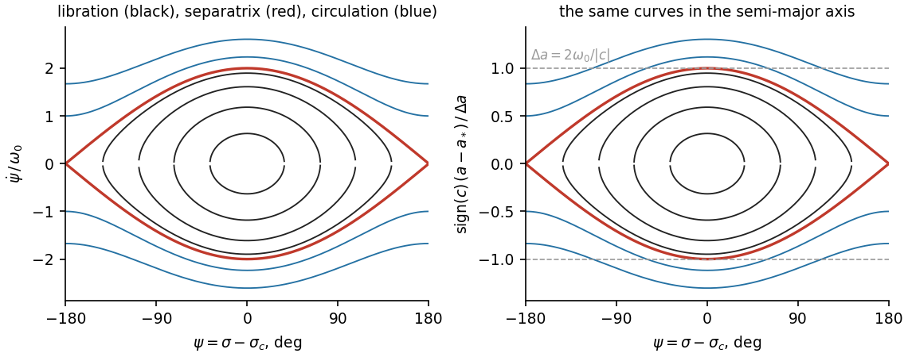
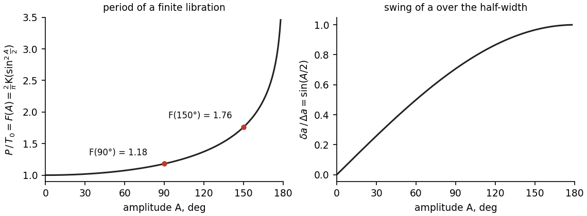

The resonant pendulum¶
This page sets out the physical model every MMR test is built on: the resonant angle, the identity that ties its rate to the semi-major axis, the averaged potential that drives \(a\), and the pendulum that results. The tests themselves are on Is it this resonance?. Notation is that of the Overview.
Three layers must be kept apart. The classical model (this page) is textbook celestial mechanics. The measurement is what the package can read from a finite saved trajectory. The classification turns measurements into statuses with thresholds that are conventions, all of them settings.
The resonant angle and its rate¶
A mean-motion resonance of the body with one or two planets has the angle (Murray & Dermott 1999, eq. 8.18, p. 329; for three-body angles Nesvorný & Morbidelli 1998, eqs. 1–2, p. 3029)
with integer coefficients that obey the d'Alembert rules: the coefficients sum to zero, and the nodal ones sum to
an even number. The catalog name 4J-2S-1 stands for \(4\lambda_J - 2\lambda_S - \lambda\) plus the perihelion term
that completes the sum (Resonance matrices). Its rate (M&D eq. 8.22, p. 331) is modeled as
where \(n_j\) are the planets' mean motions measured in the run (the slope of the saved \(\lambda_j\), else a table value) and \(\nu_\text{slow} = p\dot\varpi + \sum_j p_j\dot\varpi_j + \dots\) collects the measured precession rates. This is a rate model: the slow terms are held fixed and \(n(a)\) is Kepler's law, so it is not an exact identity at every sample.
The exact resonance \(a_*\) solves \(\nu(a_*) = 0\). Near it the rate is linear in \(a\):
This is the identity. Its physical content is simple: \(\sigma\) can turn back only when \(a\) crosses \(a_*\). A libration of \(\sigma\) therefore needs an oscillation of \(a\) about \(a_*\) with the right amplitude and the right phase. Most catalog angles have \(k<0\), hence \(c>0\). A retrograde orbit (\(i > 90°\)) uses its own angle convention built from \(\Omega,\omega,M\) (Resonance matrices).
The averaged potential and Lagrange's equation¶
The planet perturbs the body through the disturbing function, direct plus indirect part (M&D eq. 6.13, p. 227):
Averaged over the fast angle at fixed \(\sigma\) (the planet's longitude runs over \(\lvert k\rvert\) turns while \(\sigma\) and the slow elements are held), it becomes a function \(\bar R(\sigma)\) (Gallardo 2006, eqs. 1 and 6, p. 30). The package computes this average by quadrature, with both orbits three-dimensional and the planet on its eccentric, inclined orbit (its saved elements when the planet was saved, else its mean J2000 ellipse; see below); no expansion in \(e\), \(i\) or the semi-major-axis ratio is made. Lagrange's equation for \(a\) (M&D eq. 6.145, p. 251), at first order in the planet's mass, gives
using \(\dot n = -\tfrac32 (n/a)\,\dot a\). With the positive disturbing function used here, stable centers are the minima of \(\bar R\) (the common Hamiltonian convention writes the perturbation as \(-R\); the physics is the same). The minimum the body occupies, \(\sigma_c\), need not be at \(0\) or \(\pi\): exterior \(1{:}n\) resonances have asymmetric wells, and the minima move when \(e\), \(i\), \(\omega\) or the planet's perihelion change (Gallardo 2006, §3).
The average is frozen at the instantaneous slow elements and taken at first order in the mass. It fails at a close encounter (inside a few Hill radii of the planet), where the package does not use it.
The pendulum¶
Near a single well, \(\ddot\sigma = -V'(\sigma)\) is a pendulum. Measured from its center, \(\psi = \sigma - \sigma_c\), the cosine pendulum has (M&D eqs. 8.45–8.52, pp. 335–337)
with \(h<1\) for libration, \(h = 1\) on the separatrix and \(h>1\) for circulation. The package's energy variable is, for any fitted \(V\),
normalized by the global minimum and maximum of \(V\). For one harmonic this is the expression above. With two harmonics and two wells the two maxima alternate with the wells, so both wells are bounded by the lower maximum, the barrier between them, which lies below \(V_\text{max}\): their separatrix sits at \(h<1\), and \(h<1\) alone does not say which well the orbit is in. \(h = 1\) stays the boundary of circulation: a loop between the barrier and \(V_\text{max}\) librates around both wells; only \(E > V_\text{max}\) lets the angle turn. The rules that read \(h\) against 1 (crossings, the filter guard, the turns' zone edge \(h_\text{hi}\)) mean circulation, and the global normalization is the right one there. The predicted period of a cycle is taken in the well that holds it (the basin of the cycle's fastest sample), up to that well's own barrier, the lower of the two maxima around it, and so is its action (below).
Period. A libration of amplitude \(A\) (half the peak-to-peak swing) has the period
with \(T_0 = 2\pi/\omega_0\) the small-amplitude period and \(\mathsf K\) taken with parameter \(m\) (some authors use the modulus \(k\), \(m = k^2\)). Values: \(F(30°) = 1.017\), \(F(90°) = 1.180\), \(F(120°) = 1.373\), \(F(150°) = 1.762\), \(F(170°) = 2.44\). The period grows without bound at the separatrix. The package converts each observed cycle into a small-amplitude period, \(T_0 = P_i/F(A_i)\), and takes the median over the cycles of an episode.

Libration (closed curves), circulation (open curves) and the separatrix, in \((\sigma,\dot\sigma)\) and in \((\sigma, a)\); the half-width \(\Delta a\) of the resonance is the separatrix's reach in \(a\).
The period factor \(F(A) = P/T_0\).Width. Through the identity, \(\dot\sigma = c\,(a - a_*)\) maps the separatrix into a band of \(a\). For the cosine pendulum the half-width and the half-excursion at amplitude \(A\) are (M&D eqs. 8.57–8.58, p. 338)
This is the cosine-equivalent half-width, set by the curvature of the well. For a well of any shape the physical half-width is
with \(E_\text{sep}\) the well's own barrier. The two differ for a non-cosine well: for \(V = -\cos 2\sigma\) and \(\lvert c\rvert = 1\) the curvature formula gives 4, the true half-width 2. The figure's "width in \(a\)" row uses the cosine-equivalent scale.
Action. The action of a libration of energy \(E\) in a well bounded by \(\psi_-\) and \(\psi_+\) is
For the cosine pendulum \(J_s = 8\omega_0/\pi\) at the separatrix and (Wisdom 1985, §III, p. 277, with his modulus translated to the parameter \(m\))
At \(\omega_0 = 1\), \(h = 0.5\) a direct quadrature gives \(J = 1.0787\), \(J_s = 2.5465\), \(J/J_s = 0.4236\), as the closed form does. For a fitted potential with two harmonics the package evaluates the same integrals numerically in the well the cycle occupies (the basin of its fastest sample, as for the period), up to the lower of that well's two bounding maxima, with \(J_s\) taken at that barrier: the action is the area of the cycle's own loop over \(2\pi\) (M&D 1999, eq. 8.204, p. 376) and \(J_s\) that of the separatrix that bounds it. With two harmonics both wells of a double well share their two maxima, have one period at one energy, and differ in action by a constant, \(J_\text{deep}(E) - J_\text{shallow}(E) = J_\text{deep}(V_\text{shallow min})\) (\(dJ/dE = P/2\pi\) in both). The deepest well's ratio of a shallow-well cycle, \((J + C)/(J_s + C)\), would always be too large: for \(V = -\cos\sigma + 0.6\cos2\sigma - 0.25\sin\sigma\) at \(h = 0.18\) it is 0.66 where the cycle's own is 0.10. In a slowly changing well the action is the adiabatic invariant: the amplitude may change, the action does not, except near the separatrix (Wisdom 1985, pp. 274, 279).
Above a lower saddle. In a potential of several wells a cycle whose energy exceeds its well's barrier but not
\(V_\text{max}\) librates on one loop around both wells. That loop has no single-well \(J/J_s\): the package leaves it
undefined (sep_cycle_J nan, topology merged_wells in sep_cycle_topology; rotation above \(V_\text{max}\)) and
reports the loop's own action \(J_\text{loop}\), the same integral between the loop's turning points
(sep_cycle_J_loop_rad2_yr), with \(dJ_\text{loop}/dE = P_\text{loop}/2\pi\) (sep_cycle_dJdE_loop_yr), finite
between the saddles. For \(V = -\cos\sigma + \cos2\sigma\) at \(E = 1\) the turning points are
\(\pm\arccos\big((1 - \sqrt{17})/4\big) = \pm 2.4667\), \(J_\text{loop} = 2.6051\) and \(P_\text{loop} = 6.8905\); just above
the barrier \(J_\text{loop}\) is the sum of the two lobes' actions. Clipping the ratio to 1 there would
put such a cycle in the separatrix zone. A libration whose mean energy reaches the top of a potential of one well keeps
\(J/J_s = 1\) (the separatrix, within the energy's scatter).
Above the separatrix, and the code
For the cosine pendulum the revolution period above the separatrix (\(h > 1\)) is
\(2\mathsf K(1/h)/(\omega_0\sqrt h)\), and the ratio of the slowest to the mean rate of a revolution is
\(r_\text{pend}(h) = \frac{2}{\pi}\sqrt{(h-1)/h}\,\mathsf K(1/h)\). In the code, \(h\) is Potential.energy_h; the
well of a cycle is pendulum.occupied_well, its barrier pendulum.well_separatrix, its period
pendulum.cycle_period; \(d(J/J_s)/dh\) uses that well's \(J_s\) (CycleEnergy.well_rad, empty for the deepest
well). The topology is pendulum.libration_topology, \(J_\text{loop}\) pendulum.loop_action_through. pendulum.py keeps both the cosine-equivalent and the physical half-width.
How strong must the resonance be?¶
The pendulum frequency fixes the strength of the resonance. Writing \(\omega_0 = \lvert k\rvert n\sqrt{3\mu_\text{eff}}\),
with \(T_0\) the median small-amplitude period of the decisive episode (\(P_i/F(A_i)\) already corrects each cycle for its amplitude, so \(F\) enters only once). In these units the cosine half-width is \(\Delta a = \tfrac43 a\sqrt{3\mu_\text{eff}}\).
The curvature, not the first Fourier harmonic, is what sets the small-amplitude period, and the curvature is
taken at the minimum whose basin holds the measured center. An evaluation counts only when the observed swing
librates in that well (it contains \(\sigma_c\) and does not pass over the global maximum of \(\bar R\)). The theory is
evaluated at MMR_STRENGTH_SNAPSHOTS = 3 times in the episode, so it is a range, not a number. When the planet was
saved, each snapshot uses the simultaneous averaged elements of the body and the planet. Otherwise the planet's
phase is unknown: its mean J2000 ellipse is turned about the ecliptic pole to MMR_STRENGTH_UNSAVED_PLANET_PHASES
= 4 equally spaced orientations at each snapshot, and the range spans snapshot times and trial orientations
(str_planet_elements = mean_orbit_phase_scan instead of saved). This route still gives a direct strength.
At high order the resonant term is so weak (of order \(e^q\) of \(D\), \(q\) the order of the resonance, Overview; not the sum of the slow coefficients of a multiplet member) that the curvature drowns in rounding. The package then computes the resonant harmonic itself in extended precision,
since a term \(2\lvert C\rvert\cos\) has curvature \(2\lvert C\rvert\) at its minimum.
Extended precision: when and how
MMR_STRENGTH_MP = auto switches to the harmonic when the double-precision profile is rounding (its curvature
below MMR_STRENGTH_DOUBLE_FLOOR × \(\lvert D_0\rvert\)). The harmonic is
\(C = \langle D\,e^{-i(k_P\lambda_P + kM)}\rangle\) over the two mean anomalies, a 2-D trapezoidal sum in mpmath
(MMR_STRENGTH_MP_*) checked against two grids shifted by half a node.
The strength check compares the two: it passes when the range of \(\mu_\text{req}/\mu_\text{eff,th}\) overlaps
\([1/x, x]\), \(x\) = MMR_STRENGTH_CHECK_RATIO = 10, and fails when the whole range lies outside. A ratio beyond
MMR_STRENGTH_IMPLAUSIBLE_RATIO = 1000 either way is called implausible: the observed period would need a force a
thousand times larger (or smaller) than the resonance can give (Is it this resonance?).
If the potential is resolved but none of its evaluations has the observed swing librating in its well, the check
fails (centre_outside_well), whatever the ratio: the range shown then covers every evaluation, also those outside
the occupied well, and is a diagnostic only. Not measured: no episode, no stable well near the measured center, a quadrature that does not converge (nearly crossing
orbits), or the body within MMR_STRENGTH_MIN_DISTANCE_HILL = 3 Hill radii of the planet at the center.
Three-body resonances¶
A three-body term appears at second order in the masses (Morbidelli 2002, §9.3, p. 223; Nesvorný & Morbidelli 1998, §3, pp. 3031–3032). This implementation has no directly averaged three-body potential, and no center track for three-body angles; it uses only the order-of-magnitude scale
which omits the coefficient of the term (that coefficient can reach \(10^2\)). The scale is used only when it is
legal: the record's median \(e\) below MMR_STRENGTH_E_MAX = 0.3 (the same median gives \(e\) in \(e^q\)) and no crossing of the term's planets. The check against it is a
support only, never a physics measurement. A second-order term can be enhanced by a near two-body commensurability
with one of its planets. Before calling a three-body strength implausible the package allows the generous
small-divisor envelope
with \(\Delta\) the smallest rate of a nearby two-body angle of those planets. The strength is implausible only when the residual also stays \(\ge\) 1000. The envelope is a diagnostic convention, not a bound on every three-body harmonic.
The small-divisor envelope in detail
The two-body angles searched are those of a planet of the term with order ≤ 20 and \(k_1 \le 60\) whose rate
\(\lvert\Delta\rvert\) comes within \(1.5 \times 2\pi/P\) somewhere in the record's range of \(a\)
(strength.small_divisor_envelope). The column str_divisor_residual is the residual above; str_method is
eq_scale for this route.
What the figure prints
Block A of the combined figure ("is \(\sigma\) the own pendulum") shows \(T_{0,\text{th}} = 2\pi/(\lvert k\rvert n\sqrt{3\mu_\text{eff,th}})\) against the observed \(T_0\), the ratio \(\mu_\text{req}/\mu_\text{eff,th} = (T_{0,\text{th}}/T_0)^2\), and the cosine-equivalent half-width \(2\omega_0/\lvert c\rvert = \tfrac43 a\sqrt{3\mu_\text{eff,th}}\) against the swing of \(a\) (B1). The width is a scale, not a bound for a non-cosine well; its tolerance is \(\sqrt x\), since the width goes as \(\sqrt\mu\).
Co-orbitals (1:1)¶
A 1:1 angle, \(\theta = \lambda - \lambda_P\), is not a cosine pendulum: its averaged potential is singular at
\(\theta = 0\) for \(e = i = 0\) and far from harmonic over a horseshoe. The package averages the full direct plus
indirect disturbing function over the planet's longitude at fixed \(\theta\) (softened at
MMR_COORBITAL_SOFTENING_HILL = 0.1 Hill radius) and writes, with \(\tilde R = a\bar R/(G m_P)\) and
\(\tilde F = a\langle\partial R/\partial\lambda\rangle/(G m_P)\),
For a circular coplanar orbit (M&D eqs. 3.178–3.179, p. 105)
the small-mass limit of M&D eq. 3.151 (p. 94). The minima at \(\theta = \pm 60°\) hold tadpoles about \(L_4\) and \(L_5\); horseshoes pass over the maximum at \(180°\); an eccentric or inclined orbit opens a well about \(\theta = 0\) where quasi-satellites librate, much faster. A horseshoe that becomes a quasi-satellite without circulating is one compound libration (Gallery).
The shortest co-orbital libration the analysis keeps is MMR_COORBITAL_PERIOD_FLOOR_FACTOR = 0.5 of the linear
tadpole period \(P_\text{orb}/\sqrt{27\mu/4}\) (Jupiter 148 yr, Earth 222 yr). A quasi-satellite needs its own floor,
from the same averaged potential: \(\omega_{QS}^2 = 3\mu n^2\tilde R''(\theta_c)\) in the well about 0. When the
orbit-averaged angle turns inside that well during a stay of at least one loop of the averaged potential through its
own turns (MMR_COORBITAL_QS_TRIGGER_PERIODS) and the first pass found no libration, the record is analyzed again
with the floor 0.5 \(P_{QS}\), \(P_{QS} = 2\pi/\omega_{QS}\) (MMR_COORBITAL_QS_FLOOR, rule G1q). \(P_{QS}\) is the period at
the bottom of the well, and a low-\(e\) quasi-satellite well softens towards its barrier: the period falls with the
amplitude (54509 YORP: 112 yr at 1°, 49.9 yr at 26°), so in that pass a run whose turns all lie in the well has the
floor min(0.5 \(P_{QS}\), 0.7 \(T\) of the loop through its own turns), read by the prominence too
(MMR_COORBITAL_QS_RUN_FLOOR, MMR_COORBITAL_QS_LOOP_FACTOR, rule coorbital_qs_run_floor; an 11-TP loop of 50 yr against a 55.7-yr floor). That
loop is the prediction at the run's own amplitude (counted runs: \(P/T\) = 0.84–1.05), so the factor carries no margin
for extrapolating from \(P(0)\); it is not below the period the pass's filter keeps at gain MMR_L8_GAIN_FAIL (\(P_c\)).
A run slower than the QS floor but faster than \(2P_c\) is filter_too_slow, as any such libration. A horseshoe that turns close to the planet is faster than a
tadpole as well: a run whose turns all reflect on a top (below) has the floor 0.5 \(T\) of the loop through its own
turns, when its local law has \(K/K_\text{th} > 0\) (MMR_COORBITAL_PROFILE_FLOOR, rule coorbital_floor_profile;
2003 YN107: 103 yr against a 119-yr loop and a 111-yr tadpole floor). A run with a turn that is no reflection (a
turn inside a well, a pair no loop joins) has the floor 0.7 \(T\) of the median loop of its reflecting pairs whose turns
are both outside the Hill sphere (MMR_COORBITAL_PAIR_LOOP_MIN_HILL = 1 Hill radius; 2022 RD2 c075: a horseshoe
of turns 1–2 Hill radii from the Earth, \(P\) = 74.5 yr, floor 56 yr), at most the tadpole floor, and only when
its own local 1:1 law passes the force check in full (MMR_COORBITAL_PAIR_LOOP_FLOOR, rule
coorbital_pair_loop_floor; 2003 YN107 c032: a horseshoe → quasi-satellite → horseshoe run of \(P\) = 105 yr whose
reflecting pairs loop in 105 and 129 yr, floor 82 yr, \(K/K_\text{th}\) 1.18). Without that force its floor stays the
tadpole floor: a wave the planet does not drive is no loop of this potential. The fastest such loop of a physical horseshoe,
turning MMR_COORBITAL_MIN_TURN_HILL = 3 Hill radii \(a_P(\mu/3)^{1/3}\) from the planet (closer the averaged problem
does not hold), sets what the prominence counts as fast (signal).
The quasi-satellite pass in detail
\(\theta_c\) is the local minimum of \(\tilde R\) nearest 0 whose basin holds \(\theta = 0\). The trigger needs a turn
(a reversal of at least MMR_TP_PROMINENCE_FLOOR_DEG): by \(\dot\sigma \propto -(a - a_P)\) it is a crossing of
\(a_P\), and a slow drift through the well has none. The stay is measured against the loop through its turns, not
against \(P_{QS}\): at low \(e\) the well is far from harmonic (2002 PN, \(e = 0.09\): a loop of \(\pm 8.7°\) takes 17.8 yr
and follows the 1:1 law with \(K/K_\text{th} = 1.00\); the loop through its turns gives 19.5 yr, \(P_{QS}\) there 32.5 yr).
Without a loop through the turns the longest \(P_{QS}\) along the stay is used. For Venus at \(e = 0.41\) (2021 XA1)
\(P_{QS} \approx 150\) yr is the tadpole period, so the pass changes nothing there. The pass is kept when it
holds a librating episode centered in the well and no fewer episodes outside the well than the first pass. An
episode takes the quasi-satellite floor only where the well exists on at least MMR_COORBITAL_QS_WELL_SHARE = 0.5
of its samples. The 1:1 force law is then tabulated on blocks of \(\min(P_c, P_{QS})\), at most
MMR_COORBITAL_QS_MAX_BLOCKS = 4000 over the record. When the step cannot filter the quasi-satellite cutoff the
action is resample or review, never extend (Actions).
The co-orbital law has no free shape and a fixed scale: fitting \(\dot a_\text{data} = K\,\dot a_\text{model} + C\) should give \(K/K_\text{theory} = 1\), the planet's own mass. That is the 1:1 force-law test (Is it this resonance?). The strength check is not applied to 1:1 angles.
The same potential answers where a 1:1 turning point lies and how far it reaches (coorbital_geometry.py): with
\(\dot\theta = -\tfrac32 n\,\delta a/a_P\) the energy integral reads \((\delta a/a_P)^2 + \tfrac83\mu\tilde R(\theta) =
\text{const}\), so a turn at \(\theta_t\) below its well's barrier is a tadpole or quasi-satellite turn, above it a
reflection on the planet's (horseshoe) or an L3 top, and the potential reverses a body only while
\(\lvert\delta a\rvert \le \delta a_\text{max} = a_P\sqrt{\tfrac83\mu(\tilde R_\text{top} - \tilde R(\theta))}\), the
top being the highest \(\tilde R\) before the body reaches the planet or L3. A reflection mirrors \(\lvert\delta a\rvert\)
(out/in = 1), and the loop through the observed turning points has the period
\(T = 2\int d\theta/\sqrt{2(E - 3\mu n^2\tilde R)}\): the horseshoe period \(T_{hs}(\theta_t)\), or the tadpole and
quasi-satellite periods at that amplitude. These are columns (cpl_* in episodes.csv) and inputs for the 1:1 rules,
not a status of their own. The turns are read on the orbit-averaged angle: the low-pass rounds a sharp turn at the
planet off (YN107's turns read 39° and 319° on \(\sigma_f\), a tadpole turn, and 2.0° and 358.3° averaged).
A record without a closed cycle is judged on its single legs with the same three numbers, the local law and the
energy (Local force and energy on a single leg): out/in tells
a reflection from a kick by a close approach, \(\lvert\delta a\rvert/\delta a_\text{max}\) a level the potential
can reverse from one it cannot.
Limits of the model
The cosine pendulum is a local normal form: it assumes one dominant resonant term, nearly constant coefficients and slowly varying non-resonant variables (Henrard & Lemaître 1983; Lemaître 1984). At low eccentricity, high order, close encounters, overlapping multiplets or a quickly changing well a richer resonant Hamiltonian may be needed. The package measures geometry and the response of \(a\) on the saved record and reports where the evidence ends. It does not solve every normal form, does not compute capture probabilities (Henrard 1982), and does not measure chaos: its energy, action and separatrix-zone numbers are diagnostics of a fitted model, not integrals of the full N-body motion.